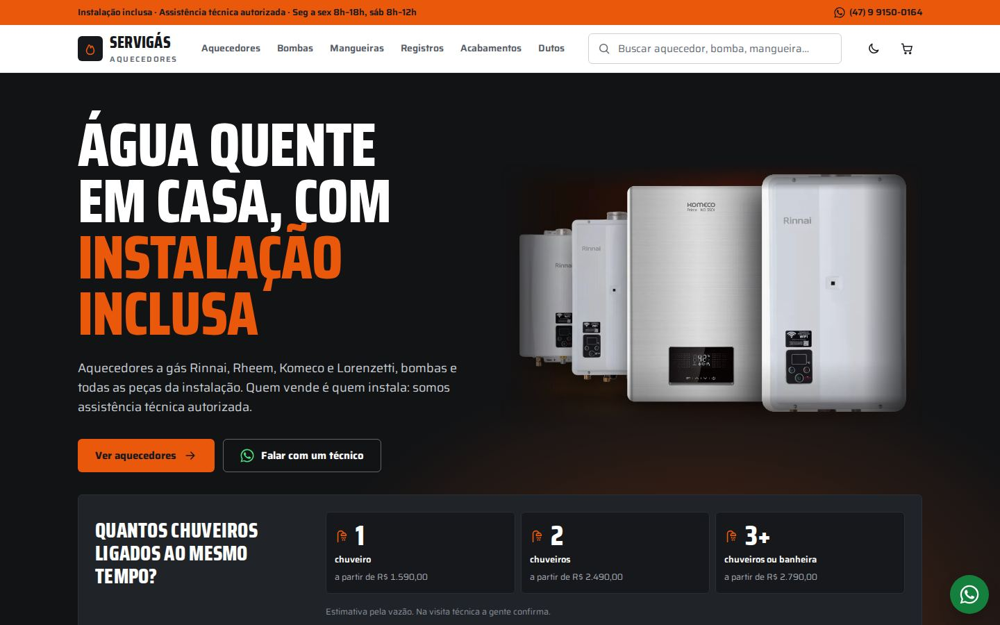

Modelo A
Oficina
Loja técnica de balcão: grafite, laranja e muita informação à vista. Segue a primeira referência (loja de autopeças).
- Para quem funciona melhor
- Quem já chega querendo comparar preços e ver o catálogo inteiro.
- Destaque
- Seletor “quantos chuveiros ligados ao mesmo tempo?” no topo, com o preço de entrada de cada faixa.